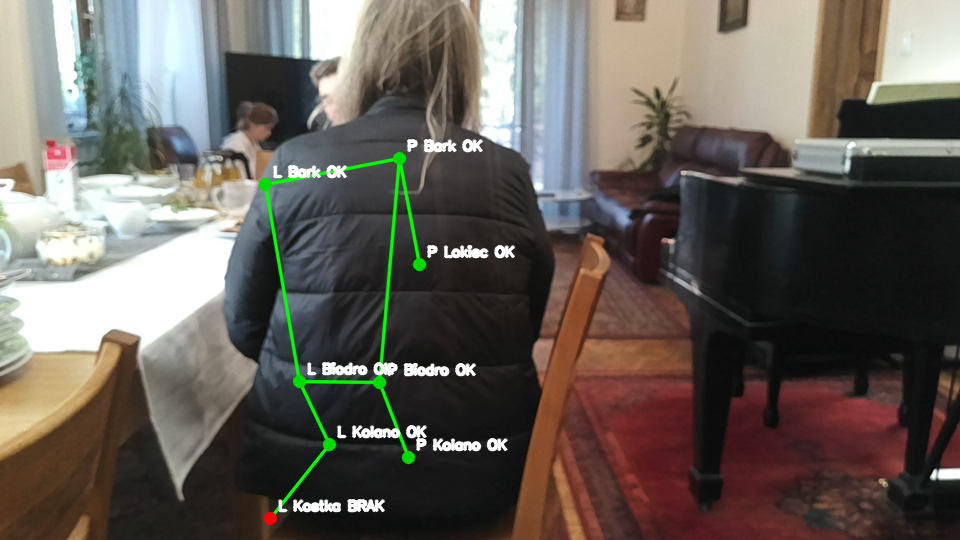
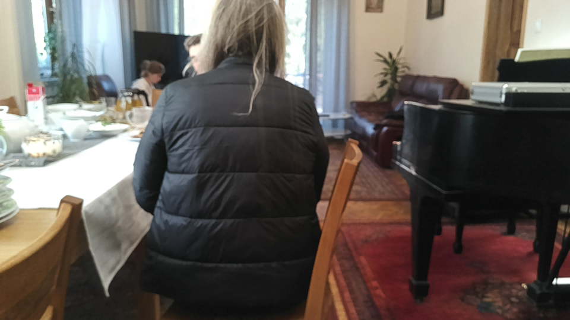
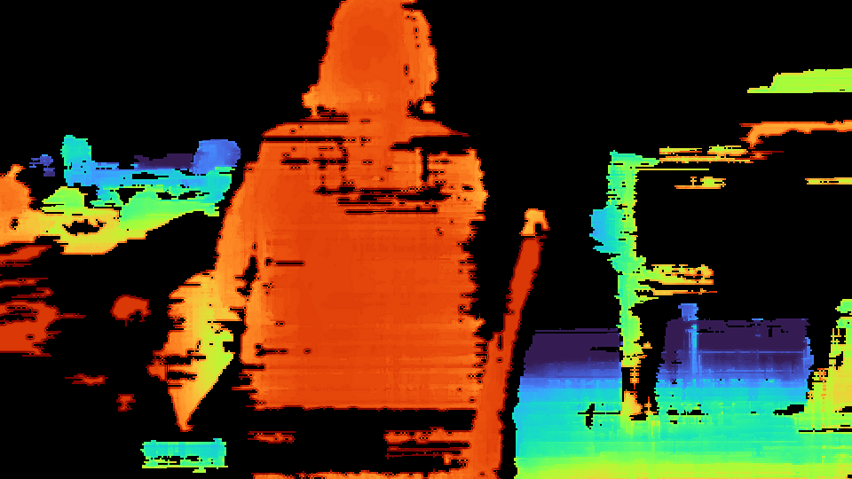
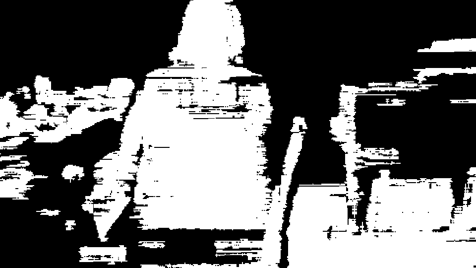
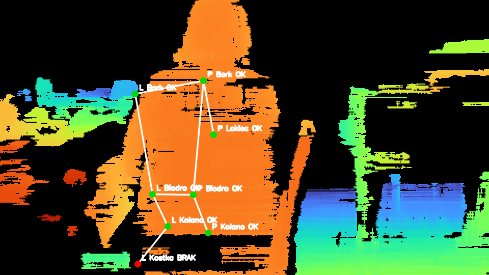
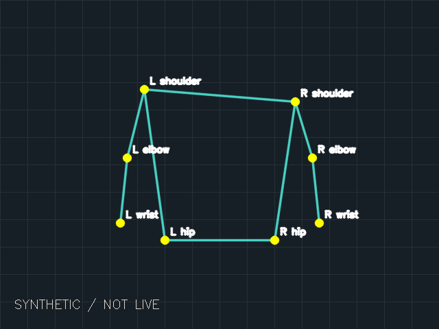
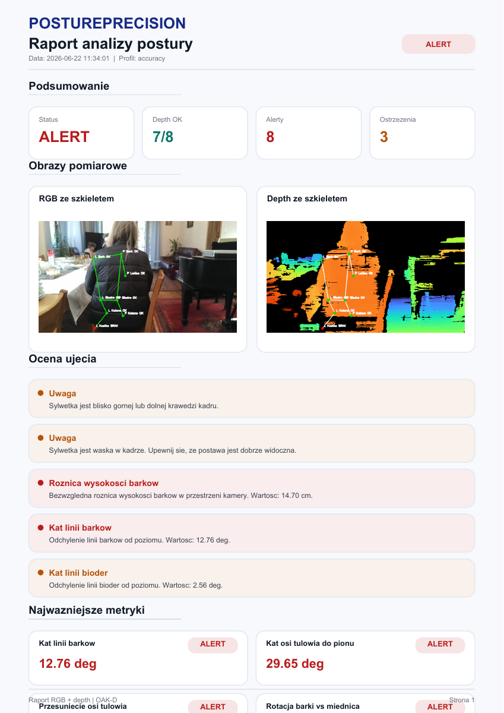

Wymagane dane są dostępne
Można obliczyć geometrię. Ostrzeżenia nadal towarzyszą wynikowi.
PYTHON · OAK-D · COMPUTER VISION
Jak połączyć zdjęcie, głębię stereo i punkty sylwetki — oraz rozpoznać, kiedy wynikowi nie można zaufać.
System Analizy Postury to prototyp dokumentowania geometrii sylwetki. Przejdź przez proces na zapisanych materiałach z projektu, bez podłączania kamery i instalowania aplikacji.
Zobacz proces ↓Wypróbuj aplikację na moim serwerze ↗
PROBLEM INŻYNIERSKI
Detektor sylwetki zwraca pozycję w obrazie. Aby obliczyć odległość w centymetrach, potrzebne są jeszcze poprawna głębia i parametry kamery. Braki w mapie, ruch albo niezgodne klatki mogą zepsuć wynik, mimo przekonującej wizualizacji.
Dlatego ważną częścią projektu jest ocena danych wejściowych i czytelne wskazanie ograniczeń wyniku.
01 / AKWIZYCJA
OAK-D dostarcza obraz RGB i głębię wyznaczoną ze stereo. Dla raportu pipeline wyrównuje depth do RGB. Zgodność klatek i kalibracja są warunkiem poprawnego pomiaru.


02 / PERCEPCJA
Ścieżka sprzętowa wykorzystuje MediaPipe do wykrywania landmarków w RGB. Każdy punkt ma pozycję w pikselach i informację o widoczności.
Aktualny zakres koncentruje się na barkach, biodrach i kończynach górnych. Starsza nakładka na zdjęciu zawiera również inne punkty — jest zachowanym artefaktem wcześniejszej wersji.
RGB → MediaPipe → punkty 2D
punkty 2D + depth → silnik pomiarowyWykryty punkt biodra nie jest markerem anatomicznym PSIS. Sama detekcja nie potwierdza przydatności diagnostycznej.
03 / WALIDACJA
Głębia jest próbkowana w oknie wokół punktu. Silnik stosuje medianę, odrzuca próbki odstające i ocenia gęstość oraz rozrzut odczytów. Błąd synchronizacji lub brak wymaganej głębi blokuje poprawny raport w aktualnej ścieżce bez override.


Można obliczyć geometrię. Ostrzeżenia nadal towarzyszą wynikowi.
Publiczny przykład zwraca błąd jakości i metryki null, zamiast pozornie precyzyjnych liczb.
04 / GEOMETRIA
Model kamery przelicza pozycję punktu i głębię na XYZ. Współrzędne odnoszą się do kamery: X w prawo, Y w dół, Z w głąb.
X = (u − cx) × Z / fx
Y = (v − cy) × Z / fy
ΔY = 18 px × 2000 mm / 600 px
= 60 mm = 6 cmSprawdzalny przykład syntetyczny: dwa barki na tej samej głębokości, różniące się o 18 pikseli w pionie. To wynik aktualnego silnika, niezależny od zdjęć archiwalnych.
Pobierz obliczony przykład JSON ↗
05 / EKSPORT
Ścieżka sprzętowa zapisuje obrazy, punkty, ocenę jakości, metryki i PDF. Surowe dane oraz wizualizacje pomagają wyjaśnić, skąd wzięła się liczba i dlaczego nie należy jej bezwarunkowo ufać.
Obok znajduje się pierwsza strona istniejącego raportu. Zawiera historyczne progi i metryki, a jego układ zachowuje ograniczenia starszego eksportu. Wyników nie przeliczano ani nie walidowano ponownie.

CO POKAZUJE TEN PROJEKT
Tryb sprzętowy i syntetyczny przykład korzystają z tej samej funkcji analizy. Przykłady nie mają osobnego, udawanego algorytmu.
Błędy wejścia, synchronizacji i wymaganej głębi są jawne. Niedostępna metryka pozostaje niedostępna.
Testy obejmują przeliczenie 18 px na 6 cm, symetrię, brak głębi, odstające próbki i kontrakt API opcjonalnego panelu.
OAK-D → pipeline → RGB / depth
→ pose → punkty 2D
→ reporting → jakość / XYZ / metryki
→ PNG / JSON / PDF
Przykład syntetyczny → ten sam silnik reportingObecne testy potwierdzają wybrane obliczenia i zachowanie aplikacji. Nie potwierdzają dokładności sensora, klinicznej wartości progów ani działania pełnego przepływu sprzętowego. Głębia dotyczy widocznej powierzchni, a nie położenia kręgosłupa. Obrót kamery wymaga uwzględnienia w interpretacji pomiarów.
STAN PROJEKTU
Ta strona to statyczne case study. Zdjęcia zostały udostępnione za zgodą użytkownika. Materiały archiwalne i dane syntetyczne mają osobne oznaczenia oraz pliki źródłowe.
Przejdź do repozytorium ↗Pochodzenie plików i sumy SHA-256 ↗